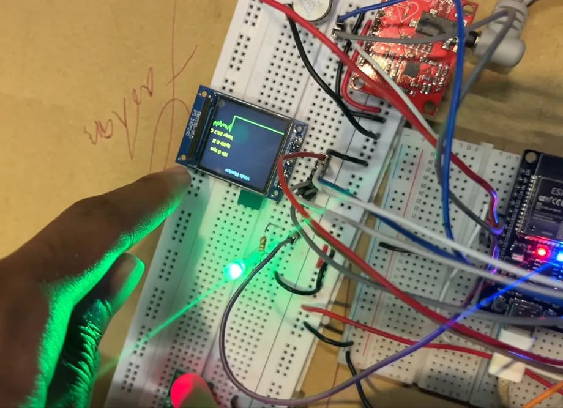
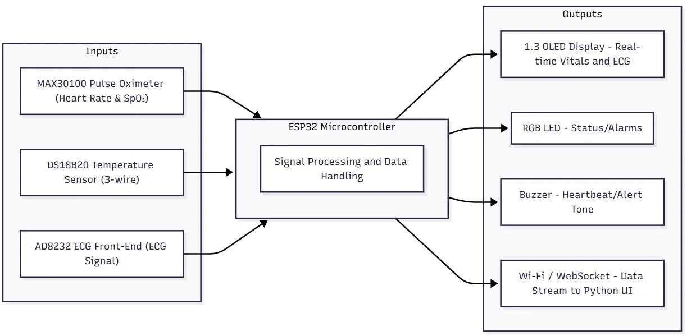
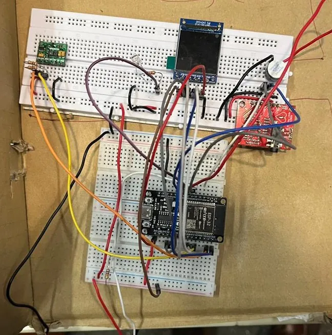
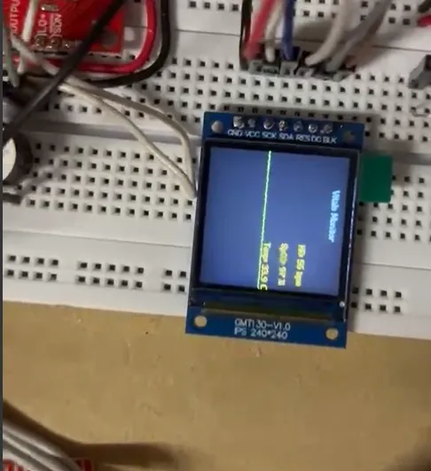
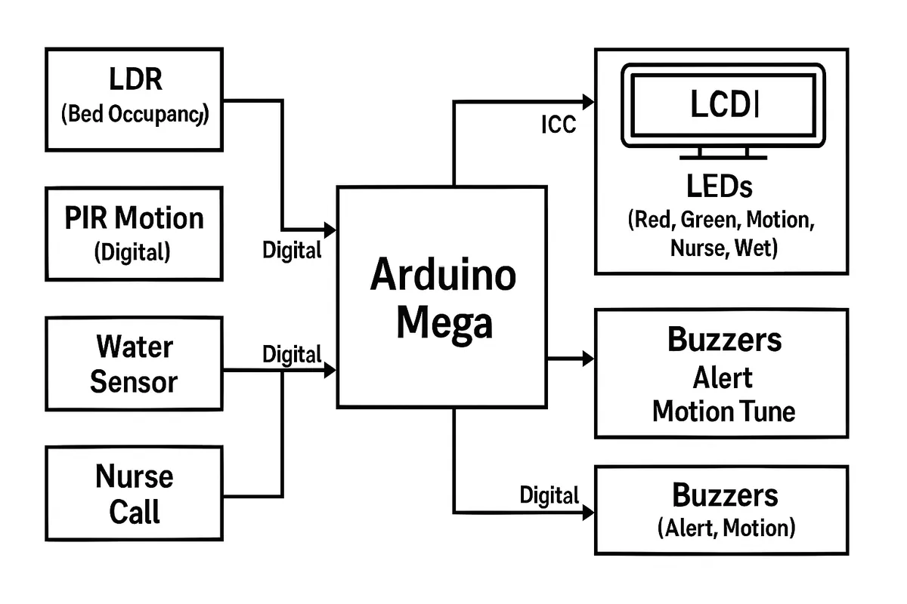
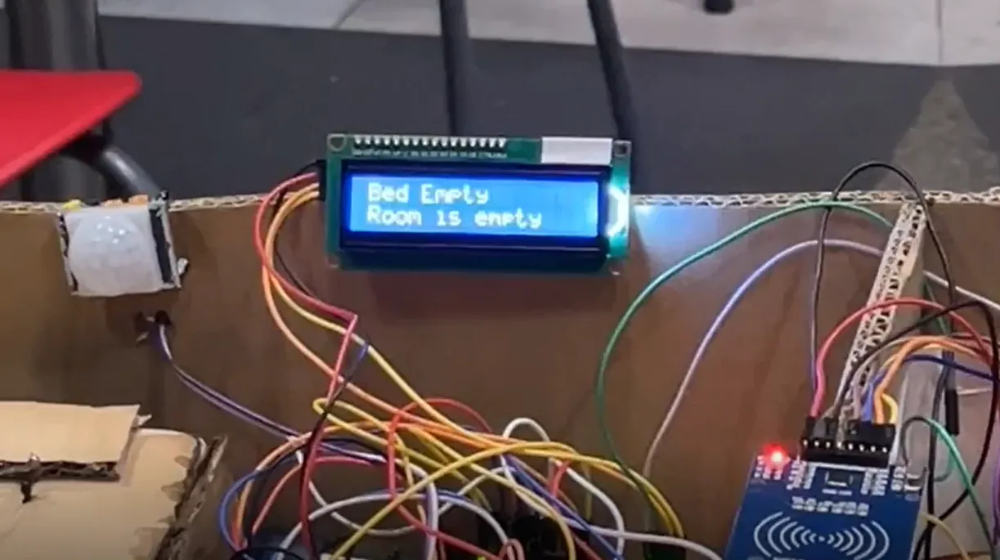
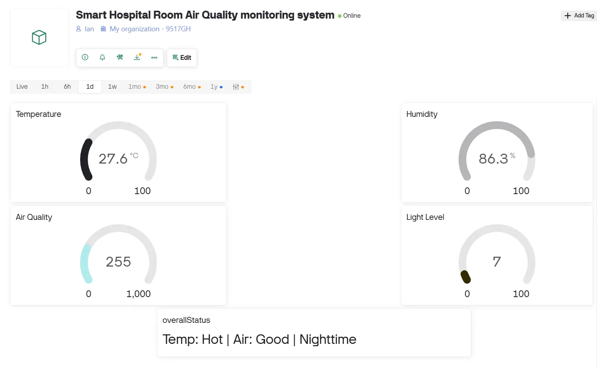

← Archive
Smart Hospital System
A bedside unit that reads heart rate, SpO₂, temperature and ECG, alarms on abnormal readings and streams to a central Python dashboard.

Overview
The group built a networked smart hospital from four subsystems. Mine works both as part of the system and as a standalone ECG monitor prototype.
An ESP32 reads a MAX30100 pulse oximeter over I²C, a DS18B20 temperature sensor over 1-Wire and an AD8232 ECG front-end on its ADC. It draws the live ECG trace and vitals on an OLED and sounds a buzzer and RGB LED on an abnormal heart rate or a flatline.
What I did
- 01Designed the I/O: two digital buses kept apart (I²C and 1-Wire) plus an analogue ECG channel.
- 02Wrote non-blocking firmware so sampling, display refresh and networking run at once without stalling.
- 03Streamed structured JSON over WebSockets to the group's Python GUI.
- 04Led integration of the four subsystems.
Signal path
- MAX30100 · DS18B20 · AD8232
- ESP32
- OLED + alarms
- WebSocket
- Python GUI
Gallery · 6 images
A closer look





